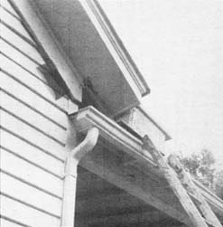
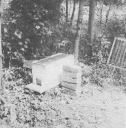
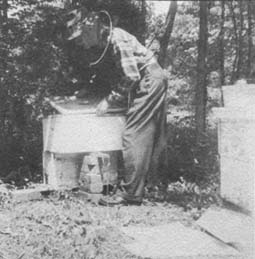
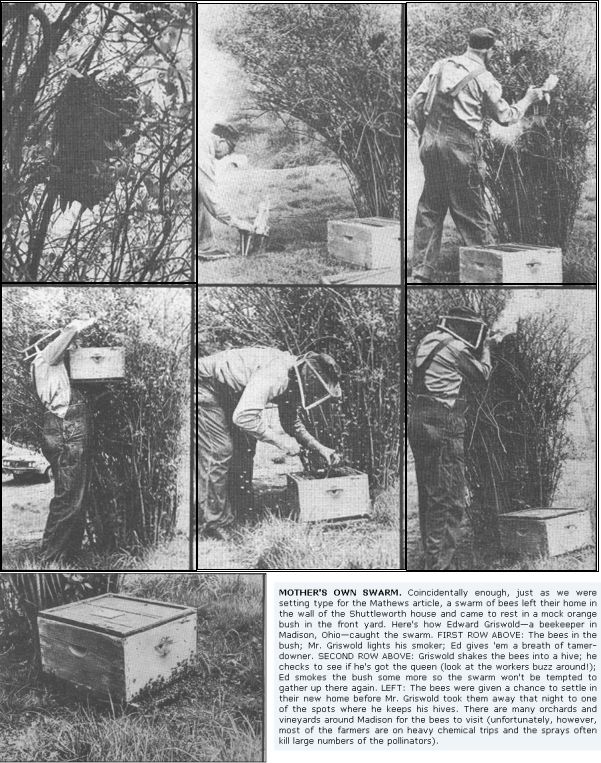

Our first warning of the invasion came on a warm, clear morning about the middle of May. My wife and I noticed a dozen or more honeybees flying close to the front of our home where the porch roof is attached . . . then a long spell of cool, wet weather set in and we didn't see the insects for a week. I was busy with other matters and thought little of it . . . until the sun came out again and our visitors returned.
"Ethel," I said, "somebody's bees are getting ready to swarm. I'd better prepare the catch-hive, because if those scouts have found a hole or a crack in the siding of this old house they'll bring back the whole bunch and set up housekeeping."
Accordingly, I got out the homemade half-size hive with which I catch swarms and raise queens. I placed an old, strong-smelling brood comb in the hive, along with another comb that contained a royal cell nearly ready to hatch. (I'd anticipated the swarming season by arranging for some of my bees to start this queen more than a week beforehand, just in case I should need her.)
I then prepared to get the hive up on the porch roof next to where the migrating scouts were buzzing around. I also figured I'd better plug any small holes in the house's siding where bees might get into the wall. Too late! As I collected my tools, Ethel came running to the workshop with the cry, "The swarm is here!"
Sure enough, bees were already creeping through an opening at the end of the weatherboarding next to the cornice. I clambered up near them and put the catch-hive on the porch roof, but-due to the overhang of the molding-I could get it no closer than about 20 inches to their point of entry. That wasn't close enough and the bees continued to make their way in under the siding instead of into the hive.
"Well," I thought, "I can still put at least part of the swarm where I want it." Masses of eager insects were clustered around the hole in the wall awaiting their turn to enter, and-since bees that have just swarmed are full of honey and don't usually sting-I scooped up several double handfuls and dumped them in front of my catch-box. They smelled the combs inside and readily crawled in . . . but I was still left with the problem of capturing the bees that were already inside the wall of the house.
If I had only succeeded in plugging the chink and setting up the catch-hive before the swarm arrived-as I'd planned-all the new arrivals would have gone into their own house instead of into mine. Then I could have closed the entrance and moved the hive to a permanent location near my other bees. The following morning newcomers would have flown out, circled around a bit to note their new surroundings, and found their way home from foraging thereafter without any trouble. As it was, however, some of the swarm were settled with their queen in the hollow wall and cornice of my home, and showed no signs of leaving.
To get the squatters out, I covered the opening where they entered with a bee escape . . . a metal device with weak brass springs so arranged that a bee can push its way through in one direction only. I also noticed a small crack in the cornice, not quite big enough for the insects to get through. When I looked in I could see jointed legs working as the resourceful creatures searched for other crevices by which they might come and go, so I bored a hole next to this gap and put another escape over it.
Soon worker bees began to find their way through the hatches and fly off to the fields and woods. On their return, however, they discovered that they couldn't get back in to deposit their loads of nectar and pollen in the combs their fellows were busily building to receive the golden harvest. It was interesting to see the returning workers' distressed behavior as they ran about looking for some way to get past the gates that had let them leave, but wouldn't allow them to re-enter. Interestingly enough, though the catch-hive was only 20 inches away, none of the returnees would go in. Instead, they clustered in bewilderment around the escapes fastened to the siding and cornice.
What should I do? To get the box any closer I'd have to build a scaffold to support it, and I didn't care to so deface the front of our house. I went to sleep thinking about the problem, and awoke during the night as a possible solution came to mind I'd nail together four wooden strips and make a tunnel to lead from the escapes to the hive!
This I did the following morning, and as soon as I put my invention in place, the bees began to enter their new home. Soon, in fact, there was a mad scramble for the opening.
The success of my tunnel device was, I think, due to the work of the farmers. These are members of a colony whose job is to hang by their feet and buzz their wings so that the air currents thus set in motion will carry excess heat and moisture from inside the hive. (Who invented air conditioning, anyhow?) In this case the discharge of stale air went out of the half-hive's entrance and up the tunnel. As the workers clustered around the escapes smelled the familiar odor of those old combs and the bees already in the box, their reaction apparently was, "Ah-h! This is what we've been looking for." And in they rushed.
After two days nearly all the insects had abandoned the wall of the house and left the queen and her attendants behind. Unfortunately, the castaways would soon starve without the workers to bring them food . . . but there was no help for it. Very few bees were seen trying to get back through the escapes, and those that had made themselves at home in the hive were going and coming in a normal manner.
Since almost the whole swarm was now contained in a box only half the usual size, I became concerned about ventilation and tacked a piece of screen wire on top of the hive. At night
I placed a folded newspaper over this grille, and laid the wooden cover over all as protection from the cool night air and possible rain.
A few days later, when I had captured all the swarm I could, I thought it was time to move the newcomers to their permanent location. After sunset, when darkness had forced the workers to quit their field work, I blew a little smoke into the entrance of the temporary home to drive back the guards posted there. (These officials keep out any would-be intruders, such as robbers from other hives.) Then I tacked a piece of screen wire over the door, and my helper-Tommy Harvey-brought the catching device down from the roof and placed the box near my other colonies.
Now there was another problem. If I simply opened the entrance, the workers would fly out to forage the next morning and-instead of coming back to the hive-would return to the porch roof location . . . where they'd find no place to go. The only solution other than moving them at least a mile away was to keep them shut up for three days. By that time, the old spot would be forgotten.
By now the weather had turned quite warm, and the swarm needed more space during its confinement. I therefore put a screen top on an empty standard-size hive body and covered half its bottom with a piece of light board (so that the remaining opening was only as wide as the top of the catch-hive). Then I puffed a little smoke through the screen lid of the smaller box (to discourage flight), pulled the cover off the halfhive and quickly placed the larger container on top.
Each morning and evening I sprinkled half a pint of thin sugar syrup through the wire cover. This food-one part granulated sugar to two parts water-was a poor substitute for the real thing, but at least it kept the captives from starving.
Fortunately the members of the other nearby hives were so busy working that the imitation nectar didn't attract them. Had the weather turned cool and cloudy, they might have licked off as much as they could of the syrup that stuck to the top of the screen . . . and then scouted around to find out what other easily gathered booty was available. When bees find a weak, poorly guarded colony they'll rob it of its treasures and kill the inhabitants. Sounds almost human, doesn't it?
The night before I released my prisoners from their house arrest, I broke off an armful of small leafy branches and placed them in front of the hive to force the bees to note their changed location. Then I reached through this foliage and pulled the screen from the entrance.
Early the next morning-when I went to see what was going on-bees were finding their way through the barrier, becoming airborne and circling about. Sometimes they flew back toward the hive several times as if to be sure of finding their way home before taking off in search of nature's sweets. Later in the day I found that a few had returned to the roof, but they soon disappeared. The brush had served its purpose, and during the afternoon I removed it from in front of the colony's new location.
The following day I shifted the catch-hive to one side, and prepared to move the bees permanently into the empty standard-size hive I'd used for a space extender.
First I placed eight frames of old combs-and the two I'd already given the colony-into the larger container, set it on a full-size bottom board and topped it with a cover. (See MOTHER NO. 12, pg. 41, for a diagram of a modern hive.-MOTHER.) Then I laid an old piece of cotton sheet about three feet square on the ground in front of the new home, with one edge extending into the hive entrance, and shook the bees still in the small box onto this cloth. They began at once to crawl into their fresh quarters. Several days later I checked and found that the new queen had hatched, flown out to mate with a drone in the air and started to lay eggs.
Soon I'll add another full-size hive body with frames of what is known as "foundation"-thin sheets of wax with the bases of worker cells stamped on both sides-to the first to make sure the bees build the kind of combs I want where I want them. If the weather continues favorable after this second chamber is filled with honey, pollen and young bees . . . I'll give the colony a super (additional section of hive) or two in which to store honey for us. After all, tenants in a modern home should pay reasonable rent.
|
 |
 |
 |
|
 |
|
|